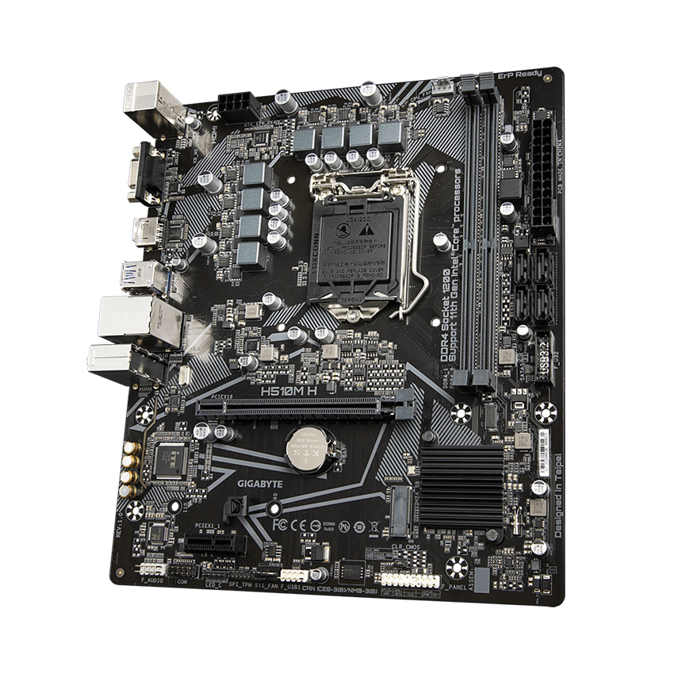
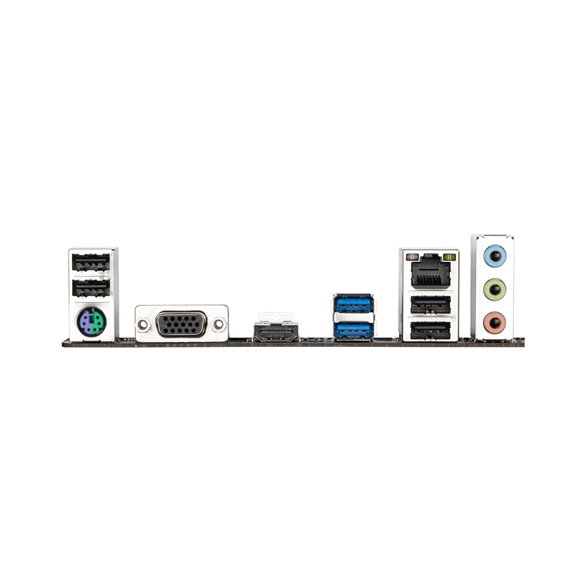

Tâm Đức nơi sửa chữa máy tính chuyên nghiệp


Main Gigabyte H510M-h 2.000.000
Đặc điểm nổi bật
- Support tất cả thế hệ Chip từ Celeron , Pentium cho đến Core i7 thế hệ cuối.- Cấu thành từ những linh kiện bền bỉ , đồng thời chịu nhiệt tốt.
- Tích hợp 2 Khe Ram hỗ trợ tối đa Bộ Nhớ lên đến 32GB cùng Bus 2666Mhz.
- Chipset: Intel® H510
- Socket LGA1200
- Bộ nhớ: Tối đa 32GB
- Âm thanh: 7.1
- Kích thước: M-ATX
Thông Số Kĩ Thuật
| cpu® | Intel® Socket 1200 for 10th Generation Core™ i7/Core™ i5/Core™ i3/Pentium®/Celeron® Processors Supports Intel® 14 nm CPU Supports Intel® Turbo Boost Technology 2.0 * The Intel® Turbo Boost Technology 2.0 support depends on the CPU types. Please refer to CPU Support for compatible CPUs |
| Memory | 2 x DDR4 DIMM sockets supporting up to 32 GB of system memory Dual channel memory architecture Support for DDR4 2666/2400/2133 MHz memory modules Support for ECC Un-buffered DIMM 1Rx8/2Rx8 memory modules (operate in non-ECC mode) Support for non-ECC Un-buffered DIMM 1Rx8/2Rx8/1Rx16 memory modules Support for Extreme Memory Profile (XMP) memory modules * To support 2666 MHz or XMP memory, you must install an 8th Generation Intel® Core™ i7/i5 processor. (Please refer "Memory Support List" for more information.) |
| graphic | Integrated Graphics Processor-Intel® HD Graphics support: 1 x D-Sub port, supporting a maximum resolution of 1920x1200@60 Hz Maximum shared memory of 1 GB |
| Audio | Realtek® ALC887 codec High Definition Audio 2/4/5.1/7.1-channel Support for S/PDIF Out * To configure 7.1-channel audio, you have to use an HD front panel audio module and enable the multi-channel audio feature through the audio driver. |
| USB | Chipset: 4 x USB 3.1 Gen 1 ports (2 ports on the back panel, 2 ports available through the internal USB header) 6 x USB 2.0/1.1 ports (4 ports on the back panel, 2 ports available through the internal USB header) |
| Bios | 1 x 128 Mbit flash
Use of licensed AMI UEFI BIOS PnP 1.0a, DMI 2.7, WfM 2.0, SM BIOS 2.7, ACPI 5.0 |
| Back Panel Connectors | 1 x PS/2 keyboard/mouse port 1 x parallel port 1 x serial port 1 x D-Sub port 2 x USB 3.1 Gen 1 ports 4 x USB 2.0/1.1 ports 1 x RJ-45 port 3 x audio jacks |